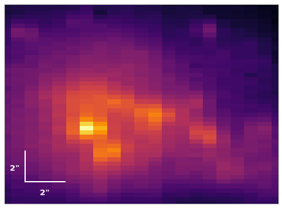
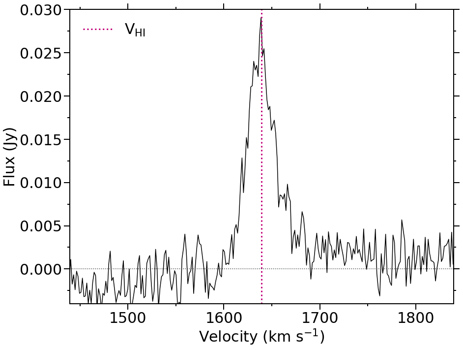
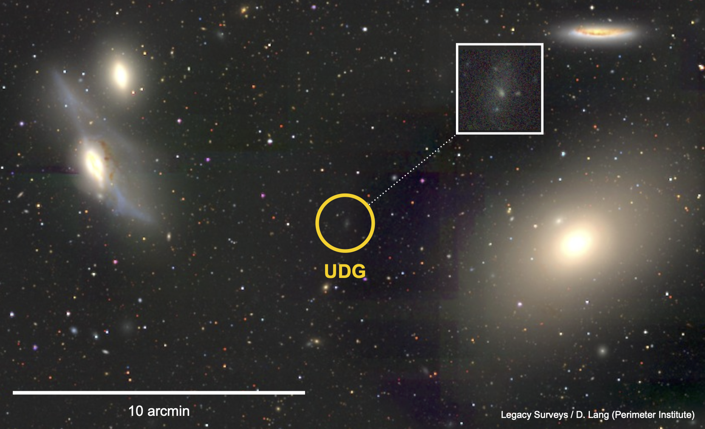
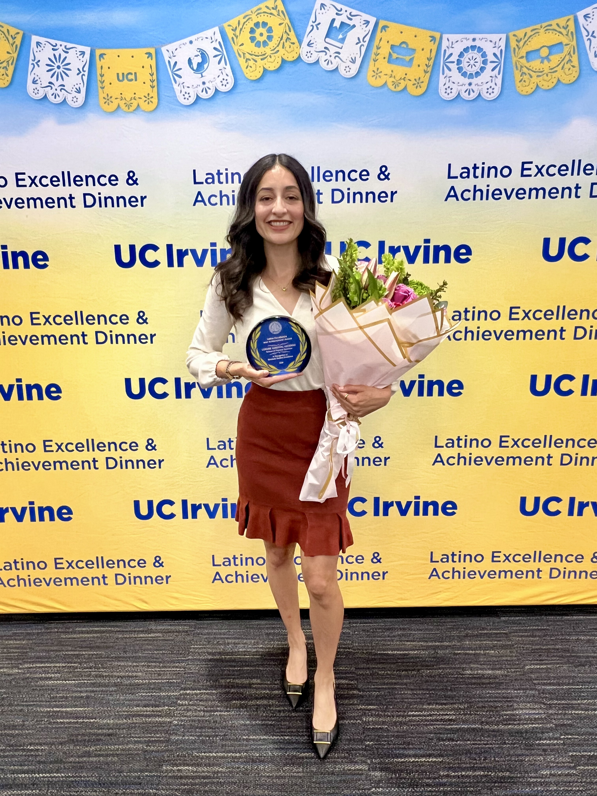
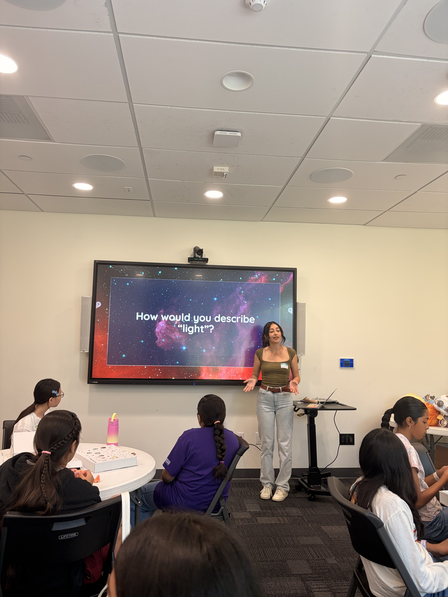
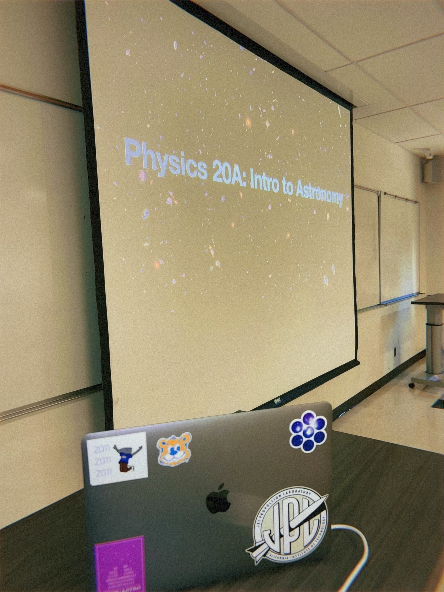
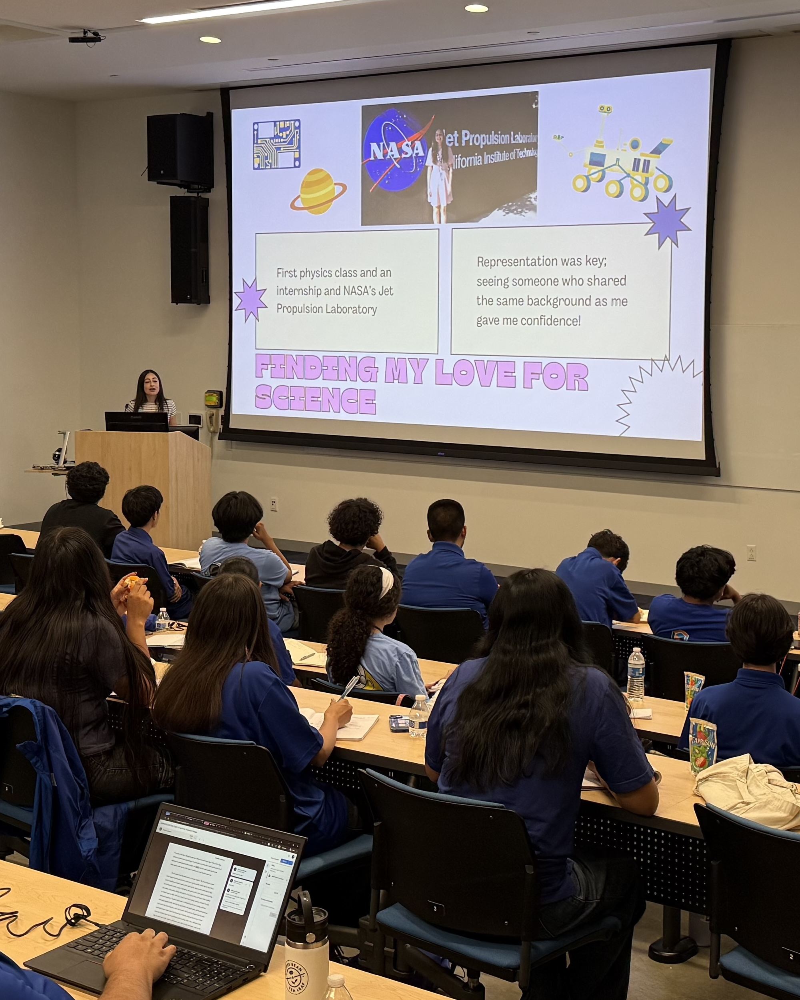

I am a Ph.D. candidate in Physics & Astronomy at the
University of California, Irvine. My research focuses on
understanding the evolution of low-mass galaxies, particularly
the processes that regulate and suppress their star formation.
I use optical spectroscopy with KCWI/Keck and radio observations from GBT to
study the stellar populations, atomic gas content, and environments of ultra-diffuse galaxies.
Research

Post-Starburst Ultra-Diffuse Galaxies
Caught in the act of quenching?
Using Keck/KCWI spectroscopy, I identified a population of post-starburst
ultra-diffuse galaxies (UDGs). Post-starburst galaxies have experienced a rapid
decline in star formation within the past ~1 Gyr, allowing us to study galaxies
shortly after their star formation has been suppressed. This work provides insight
into how diffuse, low-mass galaxies transition from star-forming to quiescent systems.

Atomic Gas in Ultra-Diffuse Galaxies
Does suppressed star formation require the removal of a
galaxy's gas?
Using 21-cm HI observations with the Green Bank Telescope, I'm studying
the atomic gas reservoirs of ultra-diffuse galaxies across
different evolutionary stages (star-forming, post-starburst, and quiescent),
to determine whether quenched low-mass galaxies are capable of retaining significant gas reservoirs,
an important ingredient for forming new stars.

Galaxy Environments
What role does environment play in shutting down star formation
in transitioning UDGs?
I examine the locations and velocities of UDGs relative to nearby galaxy groups
and clusters to determine if they are associated with larger galaxy systems.
By comparing the environments of star-forming, post-starburst, and quiescent UDGs,
I'm interested in understanding when environmental processes drive quenching and
when star formation may instead be suppressed by processes internal to the galaxy.
Publications
First-Author Publications
HI-Rich Post-Starburst Ultra-Diffuse Galaxies
Sandoval Ascencio, L.,
Cooper, M. C., Zaritsky, D., et al.
In preparation
Caught in the Act of Quenching? — A Population of
Post-Starburst Ultra-Diffuse Galaxies
Sandoval Ascencio, L.,
Cooper, M. C., Zaritsky, D., et al.
The Open Journal of Astrophysics, 8, 110 (2025)
Co-Authored Publications
SMUDGes Below the Surface: Clusters Confirm the Diversity
of Low-Surface-Brightness Galaxies
Khim, D. J., Zaritsky, D.,
Sandoval Ascencio, L., et al.
Submitted to The Astrophysical Journal (2026)
Systematically Measuring Ultradiffuse Galaxies. IX.
A Gyr in the Life of Nearby Low Surface Brightness Galaxies
Zaritsky, D., Donnerstein, R.,
Sandoval Ascencio, L., et al.
The Astrophysical Journal, 1006, 48 (2026)
The Dynamics of Infall and Accretion Shocks in the Outer Disk
Terebey, S.,
Sandoval Ascencio, L.,
Flores-Rivera, L., et al.
The Astrophysical Journal, 990, 53 (2025)
A Closer Look at an Unusual Ultradiffuse Galaxy
Khim, D. J., Zaritsky, D.,
Sandoval Ascencio, L., et al.
The Astrophysical Journal, 989, 154 (2025)
Outreach & Teaching

SACNAS at UC Irvine
I have proudly held three board positions with the Society for Advancement of
Chicanos/Hispanics and Native Americans in Science (SACNAS), beginning as
Social Events Chair, then serving as Graduate President, and now as National Liaison.
Through SACNAS, I have helped organize professional development workshops,
community-building events, and outreach while supporting undergraduate and graduate
students in STEM. Throughout my involvement, I have worked to ensure that students
from marginalized and underrepresented backgrounds feel safe, seen, and supported.

Rising Stargirls
I have worked with Rising Stargirls as a workshop facilitator
for five summers, a program very near and dear to my heart.
Each summer, we welcome nearly 50 middle-school girls from
underrepresented backgrounds for a two-week workshop exploring stars,
planets, galaxies, and black holes through lectures, artwork, and writing activities.
As a lead facilitator, I have designed and led my own astronomy
lectures and activities, while helping create an environment where
students can be curious, creative, and excited about science :)

Teaching
Teaching and mentoring undergraduate students has been an important
part of my graduate experience. I have served twice as Instructor of
Record for Introduction to Astronomy, teaching the course both in person
and virtually, in addition to working as a teaching assistant for undergraduate
physics and astronomy courses. As an instructor,
I enjoy finding ways to make challenging concepts approachable and helping students
build confidence in their ability to understand the material.

Community Science Outreach
I enjoy sharing science and my experiences beyond the university through
community outreach across OC. I have volunteered at the Discovery Cube
in Santa Ana, served as a science expo judge for local high school students,
participated in panels about graduate school and transferring from community college,
and given talks about my own path to becoming an astronomer partnering with UCI outreach programs.
I have also mentored undergraduate students and first-year Ph.D. students in my department. Through these experiences, I hope to make
science and higher education feel more accessible to students who may not have always
seen themselves represented in these spaces.
Contact
Department of Physics & Astronomy
University of California, Irvine